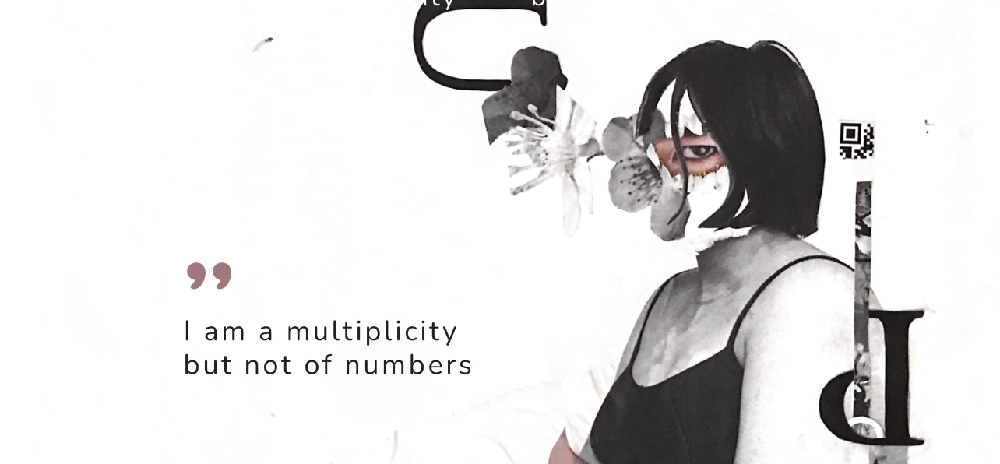
Slow Book ☁️
I completed an independent study on the topic of decolonizing design after realizing how "alternative" perspectives, people, and groups were quite literally pushed to the margins of design and design education. My personal goal was is to see more of myself and of friends and family in the strength, brilliance, and resilience of designers that don’t get as heard or represented. This resulted in me designing an independent study to analyze how systems of oppression have shaped the standards of “good” design, engage in a critical imagining of a “decolonized” alternative future for the field of design, and learn from underrepresented designers.
Client
Graphic Design Independent Study
Tools
InDesign, Illustrator, Photoshop, Procreate
Time
September 2022 - December 2022
★ Favorite Spreads
I made a book reflecting on my learning as I read various texts (both books and multimedia resources) that connect to decolonizing design. The book is a collection of my art, what I learned in the class, and my opinions on it. I connect decolonizing design to exploring my identity as Asian American and where home is for me even though I feel stuck between liminal spaces and places.
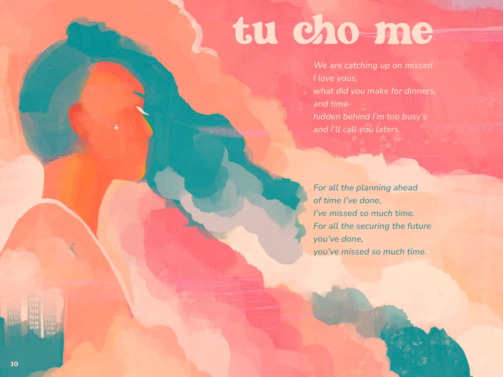
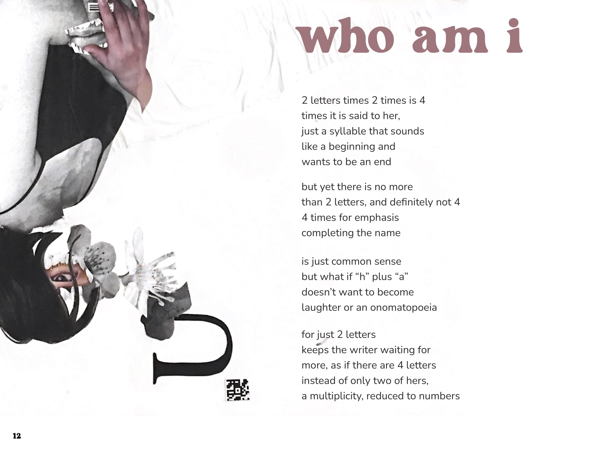
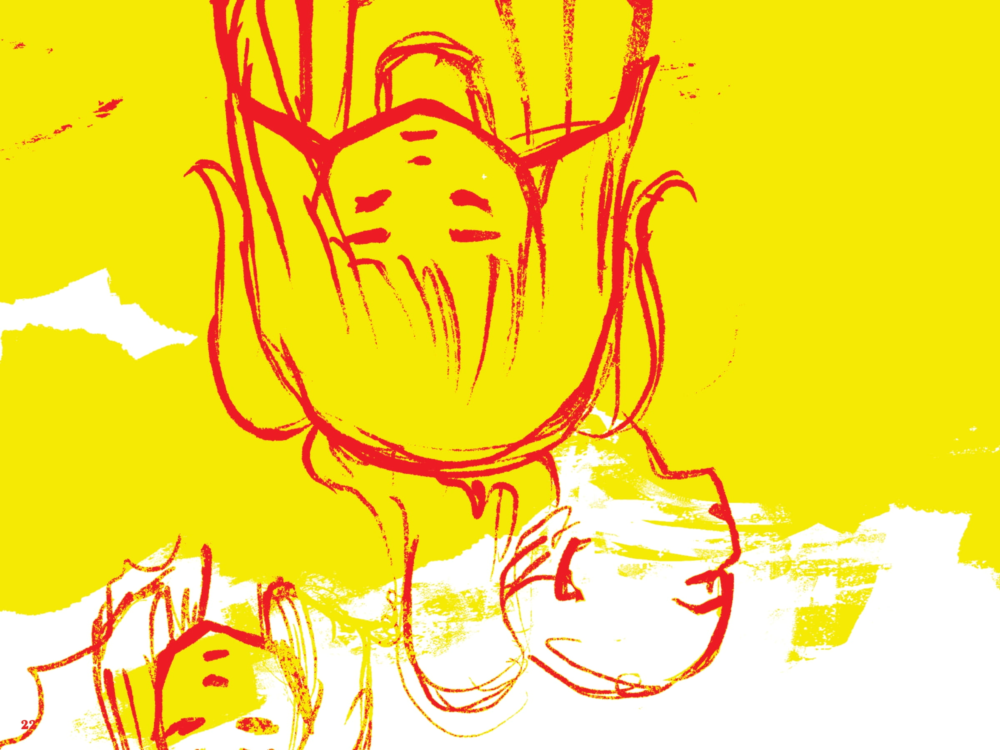
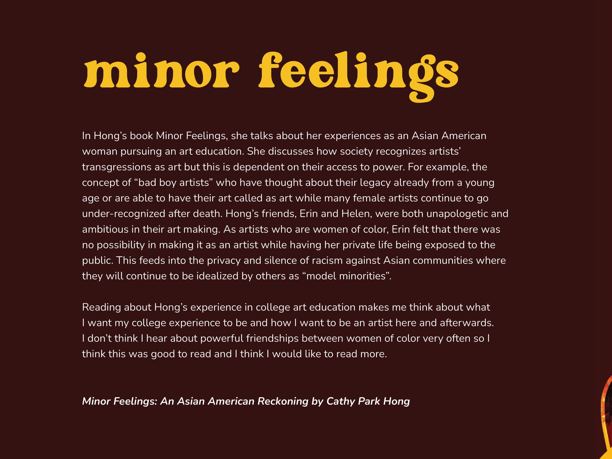
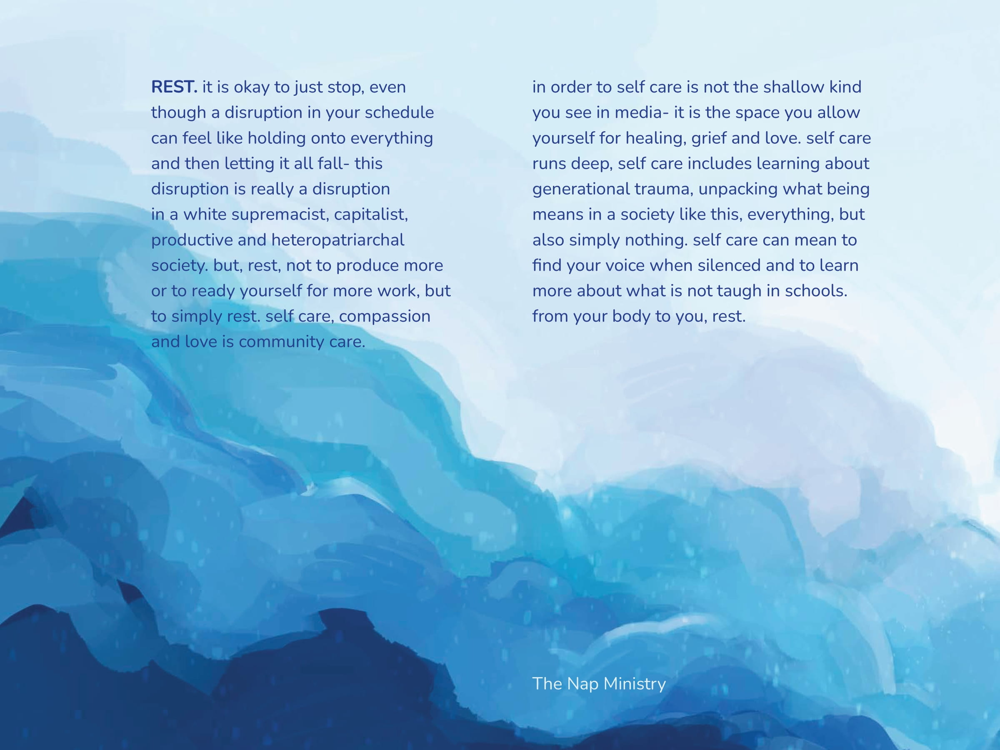
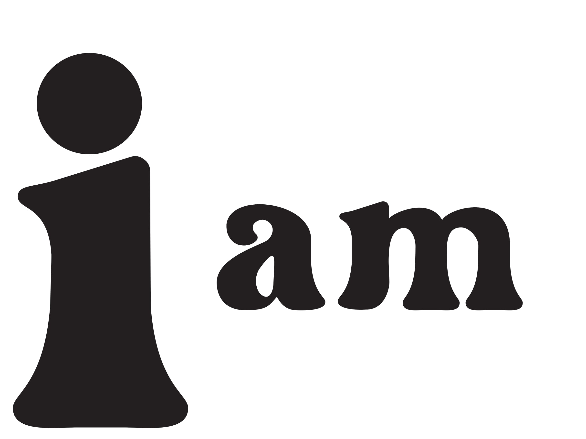
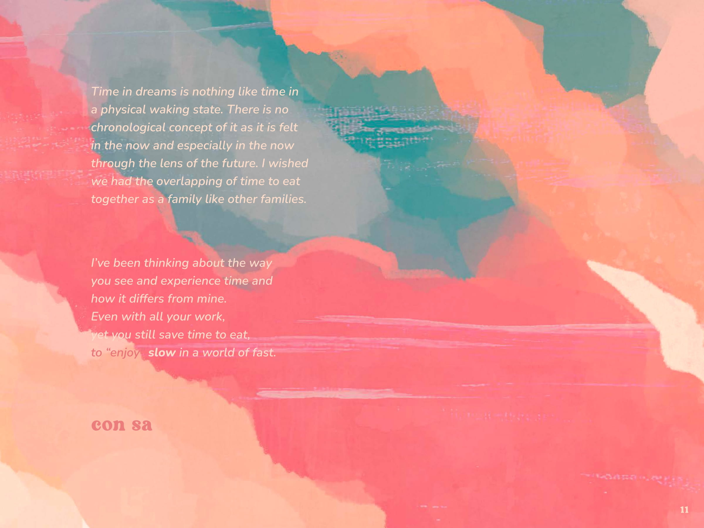
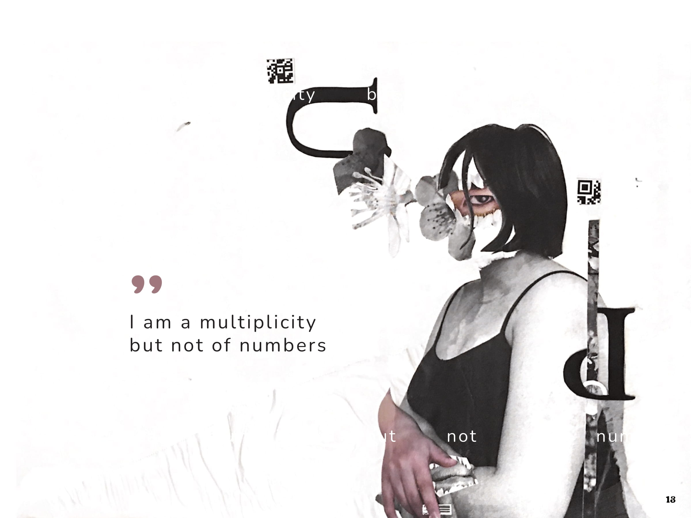
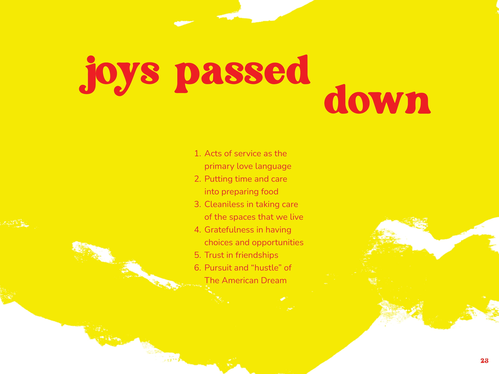
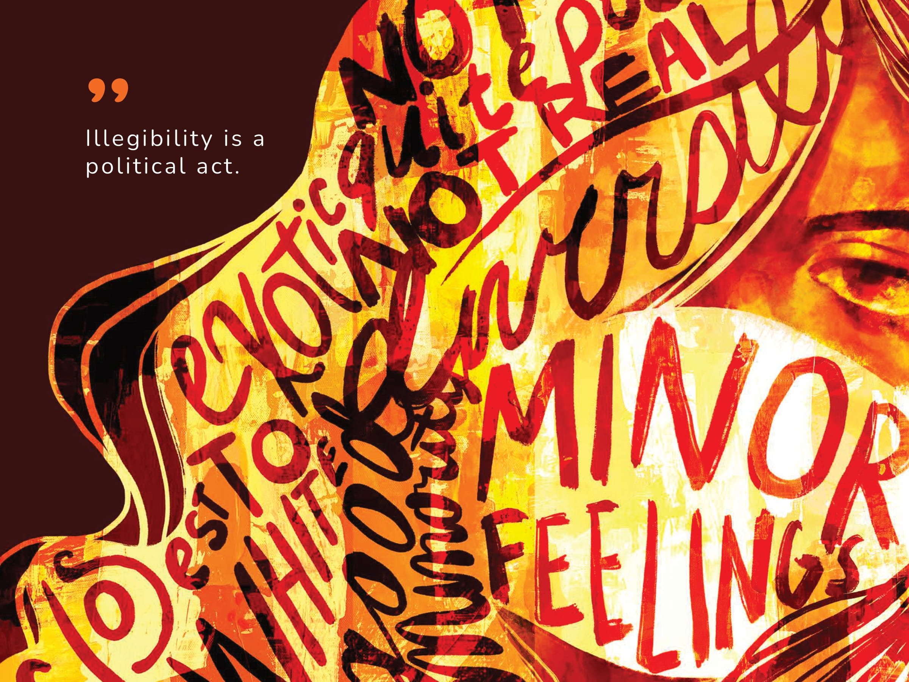
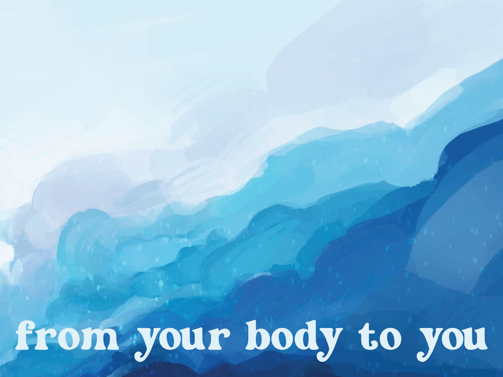
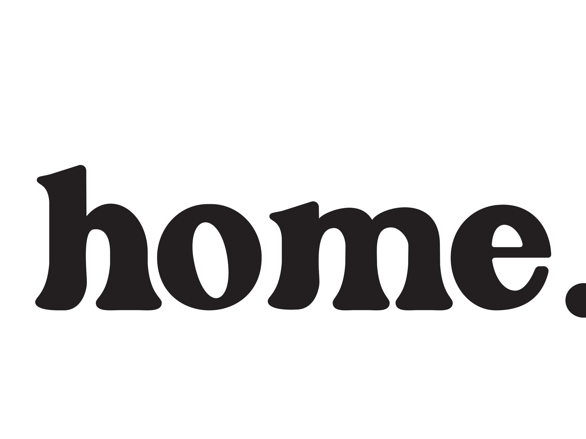
★ Process and Takeaways
I discovered so much this semester, from reading the cyborg manifesto to abolition of work, and I have questioned what I thought I knew and have worked towards learning, relearning and most importantly unlearning. Each of the pieces that go into it were made in different ways and are a reflection of what I was thinking, experiencing, and observing at the time.